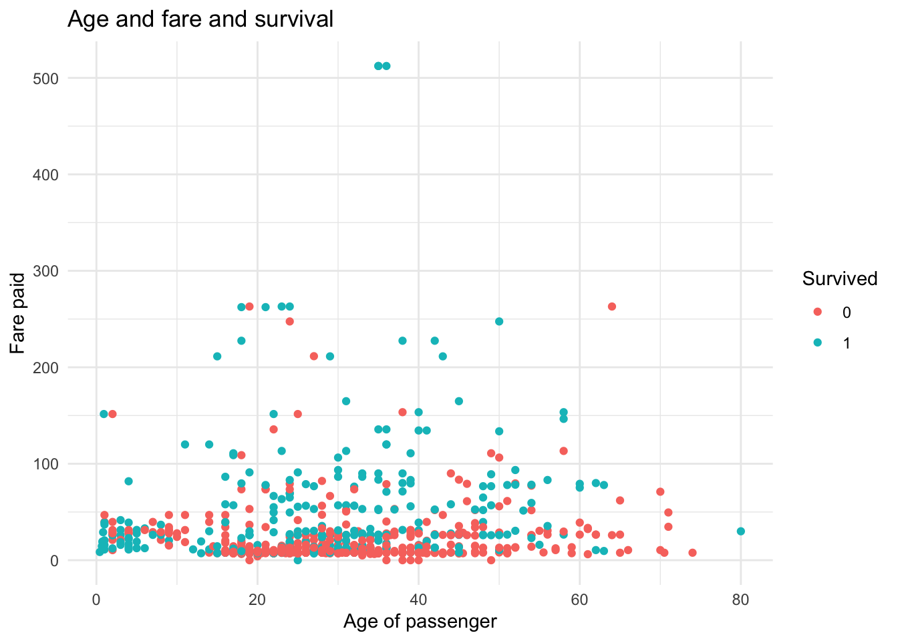
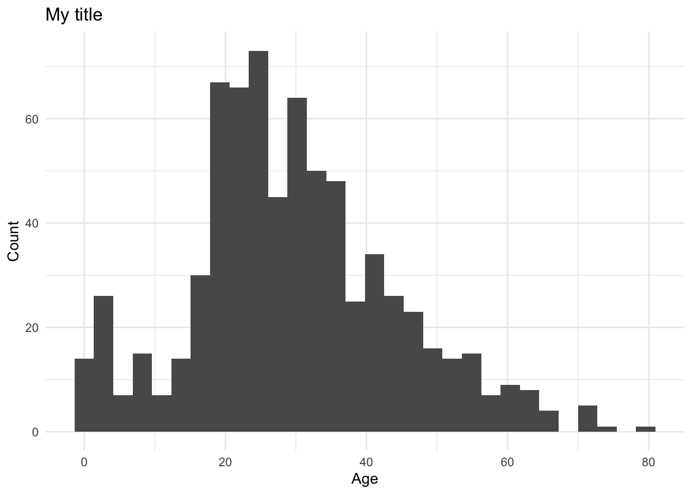
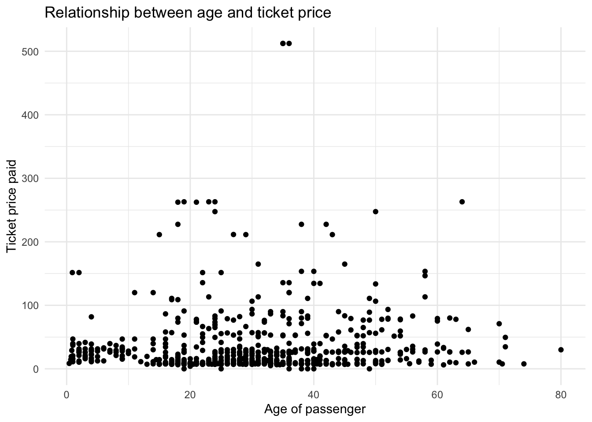
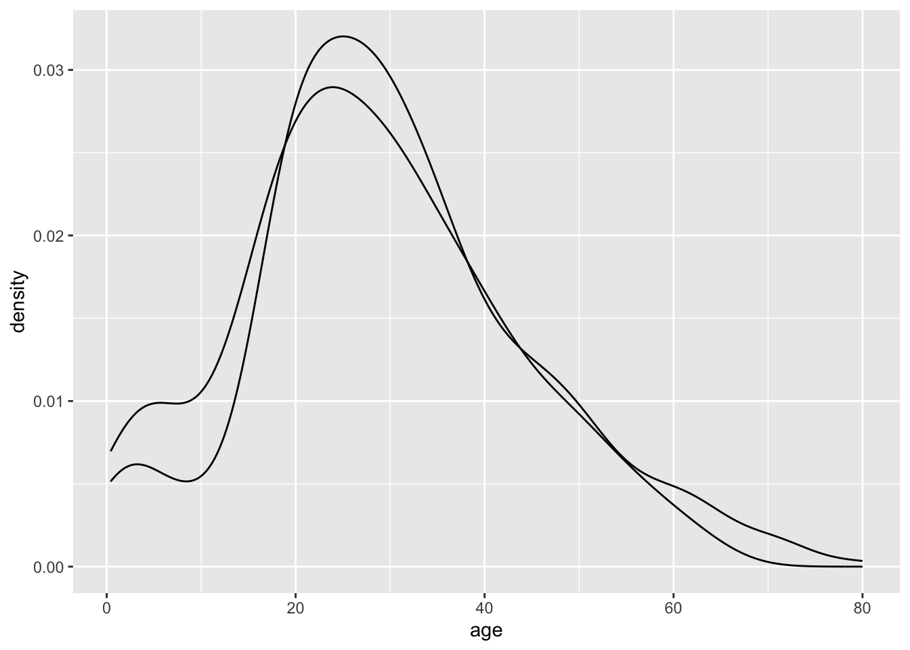
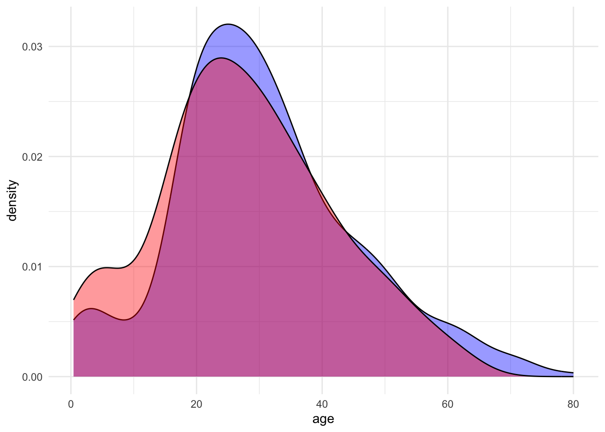
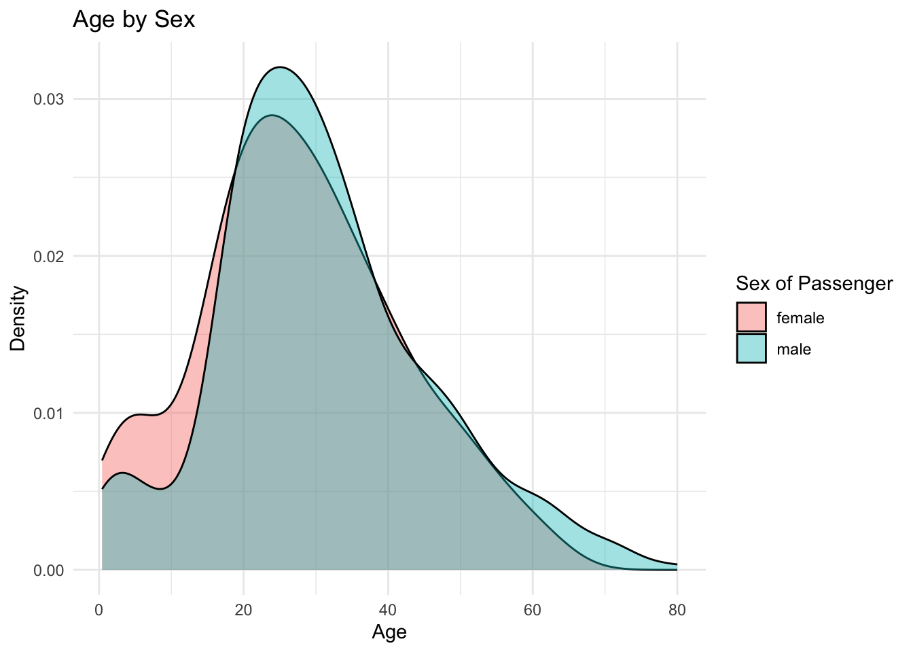
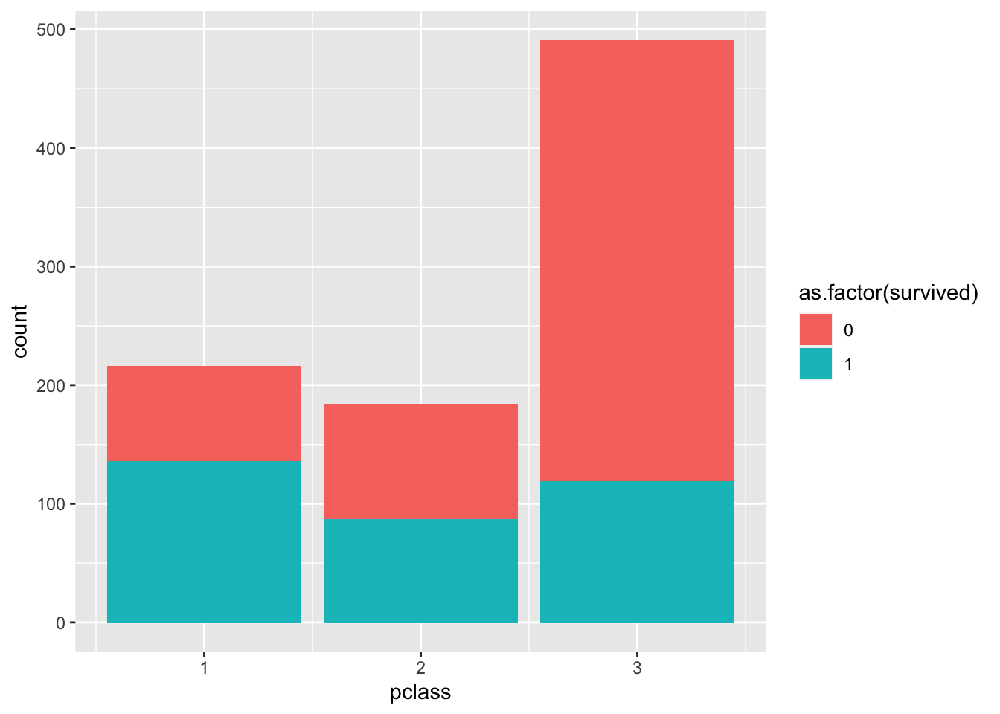
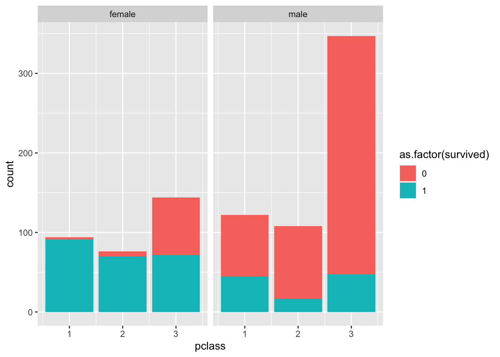
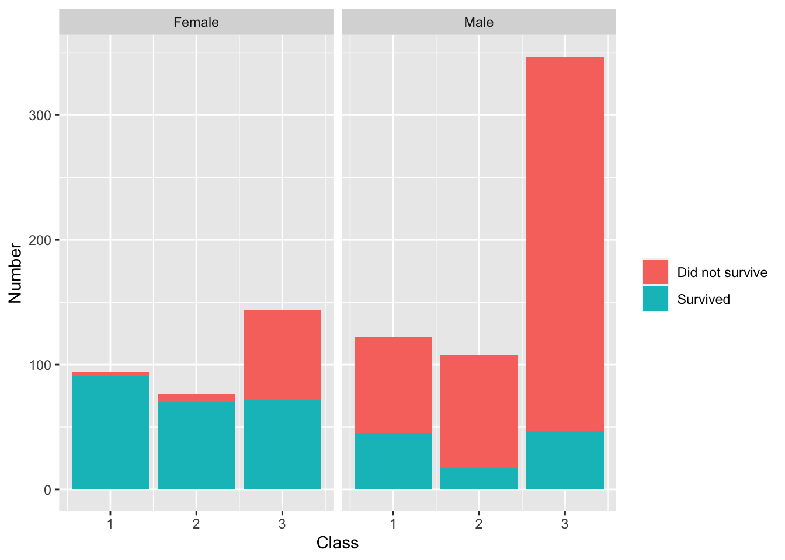
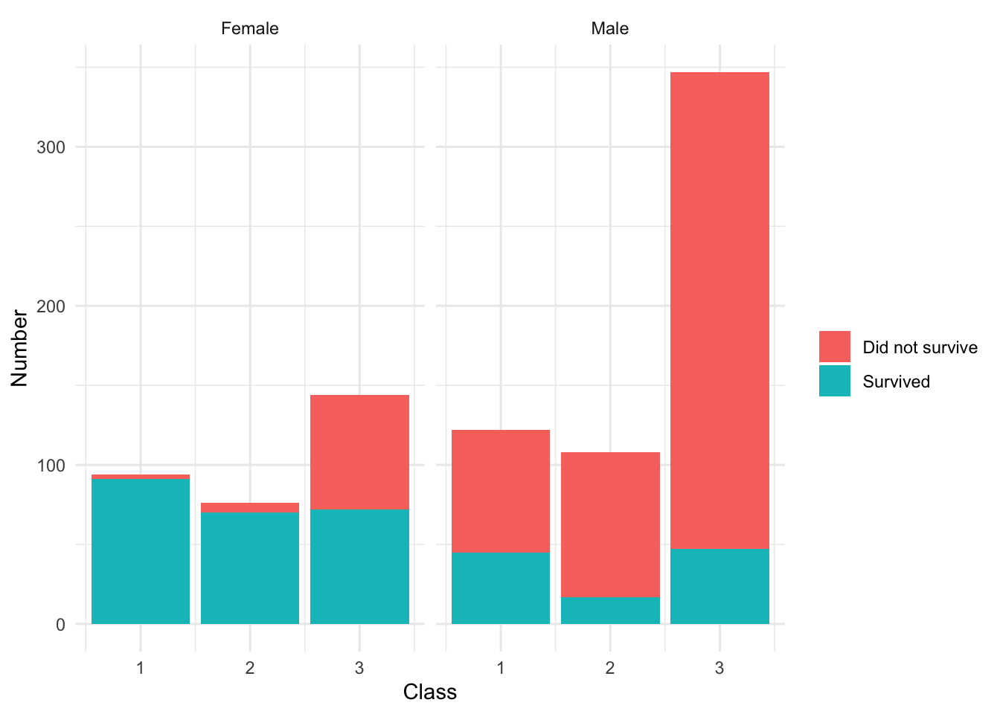

Chapter 8 Graphics with ggplot2
In this chapter, we will be focusing on visualization with an emphasis on using ggplot2. While the basic R plots have lower fixed costs to begin using, they are generally less customizable, less initially pretty, and do not work as well in the flow of the tidyverse package. On the other hand, ggplot2 has a logical flow to the graphics system. There is always a specific grammar that must be followed to make graphs, and once you understand it, making graphs becomes fun and (more or less) easy. In practice, you will learn that the essence of making graphs is Googling your questions. There is almost certainly an individual who has needed to make a graph similar to yours, and the R community has probably responded using ggplot2.
We will once again be working with the titanic_train data from the titanic package. As a reminder, this data set provides information on the fate of passengers on the fatal maiden voyage of the ocean liner “Titanic,” summarized according to economic status (class), sex, age, and survival. Here are some of the important columns:
Survived: binary variable equal to 1 if the passenger survivedPclass: the passenger’s classname: the passenger’s nameSex: the sex of the passengerAge: the age of the passengerFare: the price of the ticket the passenger paid
## loading in the data and packages
library(tidyverse)
library(titanic)
##loading in the data set and cleaning the names
titanic <- janitor::clean_names(titanic_train)8.1 The grammar of graphics
The most important aspect to understand in ggplot2 is the “grammar of graphics”. The ggplot2 package has its own syntax for making graphs. This syntax, while confusing at first, is extremely elegant when your graphics become more complicated. Let’s start off with the basic template for making graphics:
##The basic template
## This uses the titanic data set
## creates a histogram with the variable being the age column
ggplot(data = titanic, aes(x = age)) +
geom_histogram() ## `stat_bin()` using `bins = 30`. Pick better value with `binwidth`.## Warning: Removed 177 rows containing non-finite values (`stat_bin()`).
There is a LOT to unpack here, so we will go through each component thoroughly:
- The
ggplotfunction tells R that we want to make aggplot2graphic. Theggplotfunction generally takes two arguments: the tibble you want to use in thedataargument, and theaesfunction. Theaesfunction stands for the “aesthetic mapping”. The purpose of this function is to tellggplot2what you want on your x and y axis. It will then take these inputs and “aesthetically map” them to the desired type of graph. - You should notice that there are addition signs (
+) between these two lines of code. These addition signs can be thought of as a pipe, but for graphics. Specifically, they tell the graph “and now add on this”. - The
geom_histogramfunction is a function that specifies we want to make a histogram. All graphs in theggplot2package begin with “geom” so that we can easily recognize that we are calling a specific type of graph. Other examples are a scatter plot (geom_point), density plot (geom_density), box-and-whisker plot (geom_boxplot), or a bar graph (geom_bar).
8.2 Adding options
As stated above, the + is essentially a %>%, but for graphics. It can be thought of verbally as “and now add this to the graph”. To demonstrate this, let’s use our histogram of the age column that we saw in the last section. Suppose we wanted to do the following:
- Clean up the labels (such as title, x-axis, and y-axis)
- Make the default colors look better
This becomes rather simple to do in ggplot2 thanks to the grammar of graphics.
## creating the same plot as above except with a title, and edited axis
ggplot(data = titanic, aes(x = age)) + ## use the titanic tibble, map the age column to the graph
geom_histogram() + ## and now make a histogram of age
labs(title = "My title", x = "Age", y = "Count") +## and now label. the label I want is the title
theme_minimal() ## and now use this graphing theme to make it pretty## `stat_bin()` using `bins = 30`. Pick better value with `binwidth`.## Warning: Removed 177 rows containing non-finite values (`stat_bin()`).
As specified in the comments, the way we would read this code is
- Make a ggplot object using the
titanictibble and mapageto the x-axis - And now add on the labels of title, x-axis, and y-axis
- And now use a color scheme that is more appealing with
theme_minimal
Let’s try to make a few other types of graphs. As mentioned earlier, graph types usually begin with the geom_ followed by the type of graph that it is. For instance, let’s make a box-and-whisker graph (also known as a box-plot) using the sex and age columns.
## making a box-and-whisker plot
ggplot(data = titanic, aes(x = sex, y = age)) + ## make a ggplot plot using the titanic data and map age and sex to x and y
geom_boxplot() + ## and now make a box plot with x axis sex and y axis age
labs(title = "Distribution of ages by sex", x = "Sex of the passenger",
y = "Age of the passenger") + ## and now title/x-axis/y-axis labels
theme_light() ## and now make the graph look prettier## Warning: Removed 177 rows containing non-finite values (`stat_boxplot()`).Now let’s make a scatter plot using the age and fare columns:
## making a scatter plot
ggplot(data = titanic, aes(x = age, y = fare)) + ## make a ggplot plot using the titanic dat
geom_point() + ## using age as x axis and fare as y axis
labs(title = "Relationship between age and ticket price",
x = "Age of passenger",
y = "Ticket price paid") + ## and now title/x-axis/y-axis labels
theme_minimal() ## and now make the graph look prettier## Warning: Removed 177 rows containing missing values (`geom_point()`).
As shown, it is incredibly simple to switch between different types of graphs. In fact, once you have a template of the certain options you like to add to your graph, you can simply change the geom_ to your desired graph type.
8.3 Adding multiple plots together
One of the main draws of ggplot2 is how simple it is to overlay graphs. For instance, suppose we want a plot that has two histograms, one for male age, and one for female age. We can easily do this by simply adding on a geom_histogram argument.
## making two histograms on one graph
ggplot(data = titanic, aes(x = age)) +
geom_density(data = titanic %>% filter(sex == "male")) +
geom_density(data = titanic %>% filter(sex == "female"))## Warning: Removed 124 rows containing non-finite values (`stat_density()`).## Warning: Removed 53 rows containing non-finite values (`stat_density()`).
Notice that the geom_density told ggplot to create a density graph. Also notice something new: we added in a data argument to geom_density. This can be extremely useful when making multiple plots on the same graph. In our example, we told our first density graph to use the titanic data, but filter only the males. This shows how simple it is to add in tidyverse to ggplot!
Let’s make this graph a little “prettier”. Suppose we wanted to fill these density graphs with some color so we could tell the difference between them. To do this, we will use the fill argument that comes standard in each geom graph.
## making two histograms on one graph and adding color using the fill argument
ggplot(data = titanic, aes(x = age)) +
geom_density(data = titanic %>% filter(sex == "male"), fill = 'blue') +
geom_density(data = titanic %>% filter(sex == "female"), fill = 'red')## Warning: Removed 124 rows containing non-finite values (`stat_density()`).## Warning: Removed 53 rows containing non-finite values (`stat_density()`).Of course, this isn’t so pretty since one of the densities is clearly over-powering the other. This is where another new argument alpha can help us. The alpha argument is simply a number between 0 and 1 which tells ggplot how transparent the color should be. Observe:
## making two histograms on one graph and adding color using the fill argument, and alpha argument
ggplot(data = titanic, aes(x = age)) +
geom_density(data = titanic %>% filter(sex == "male"), fill = 'blue', alpha = 0.4) +
geom_density(data = titanic %>% filter(sex == "female"), fill = 'red', alpha = 0.4) +
theme_minimal()## Warning: Removed 124 rows containing non-finite values (`stat_density()`).## Warning: Removed 53 rows containing non-finite values (`stat_density()`).
8.4 Creating legends
Legends are automatically created for you using the fill argument within the aesthetic mapping. For instance, suppose we wanted to create a graph similar to above with two densities of age: one for males and one for females. We can actually accomplish this in a more compact way by adding the fill argument to our aesthetic mapping. The fill argument within aes specifically tells ggplot that you want to separate this graph by a categorical variable.
## making two histograms on one graph and adding a legend using the fill argument
ggplot(data = titanic, aes(x = age, fill = sex)) +
geom_density(alpha = 0.4) +
labs(title = "Age by Sex",
fill = "Sex of Passenger",
x = "Age",
y = "Density") + ## and now add labels to each argument of the aes
theme_minimal() ## and now make the graph have pretty color scheme## Warning: Removed 177 rows containing non-finite values (`stat_density()`).
Notice that within the labs function, we added in another argument, fill. This fill will specifically label the fill you called in the aesthetic mapping (aes). This is beneficial so you can label your legend however you want. Omit the fill argument in the labs function and see what happens for yourself.
Let’s go through the “grammar of graphics” of this graph in plain English:
- Make a ggplot object and use the
titanictibble and map theagecolumn to the graph, but do two separate “fills” (e.g., versions of the graph), one for each category of sex. - And now add on a density plot
- And now add on the graph a title with
labsand the title argument, and re-label thefillargument with the label “Sex of Passenger”. Notice that thelabslayer simply adds layers to anything argument in theaesfunction. - And now make the graph have default pretty colors with
theme_minimal

8.5 What to put in the aes function? How do I know?
The aes function within the ggplot2 object is the most important one to get a thorough understanding of. It is a common error to not understand what goes into this function. If you look back at this Guided Exercise, notice that with each aes function, only column names are passed into the aes function. This is because the aes function is what maps the data from your tibble to your graph. In sum, if you want your data from a certain column to be plotted, it needs to go through the aes function.
8.5.1 What other arguments can I pass into the aes function?
Recall that any piece of data you want from your tibble to be displayed on the graph needs to pass through the aes function. However, there are a few other types of arguments that the aes function can take other than x or y. Here are some of the basic ones which we will demonstrate:
fill- changes the area color within a graph. A categorical variable or continuous column name can be passed into this argument. A legend will appear on the graph by default with the column name that was passed into this argument. You can rename this legend with thelabs(fill = "renaming")layer.size- changes the sizing of objects on a graph (usually points). This should be done with categorical or factor columns only, althoughggplot2will automatically bin your continuous column if you happen to pass one in. You can rename this legend with thelabs(size = "renaming")layer.color- changes the outline color of the data on the graph. If a scatter plot, it will change the coloring of the dots, with one color per category of the column name that is passed into this argument. For instance, if thesexcolumn form thetitanicdata was passed into color, the data would be broken into two categories, one for “male” and one for “female” that each have different colors. You can rename this legend with thelabs(color = "renaming")layer. Note that a common confusion is the difference betweenfillandcolor. If one doesn’t provide the graph you like, it’s likely the other.
8.6 Using the pipe
While we have been using the data argument in the ggplot function, notice that there is actually no need to do this. We can automatically pass in the tibble we are working with to the data argument by using the pipe.
## These are identical pieces of code
## same as below
ggplot(data = titanic, aes(x = pclass)) +
geom_bar()
## same as above - but better!
titanic %>%
ggplot(aes(x = pclass)) +
geom_bar()You may be wondering why we would prefer the piping method. The answer is because we can chain together multiple commands before passing in the data to the graph. You will see in the next section why this can be so useful.
8.7 Faceting
One of the most powerful techniques of visualization is breaking a graph into separate graphs by a category and comparing side-by-side. ggplot2 makes this easy with the facet_wrap layer. To motivate, suppose we wish to create a visualization that shows how many people survived between each class on the titanic. We’ll start with doing a simple barplot
## splitting the barplot by those who survived and those who didn't
titanic %>%
ggplot(aes(x = pclass, fill = as.factor(survived))) +
geom_bar() 
## splitting the barplot into two separate graphs by sex
titanic %>%
ggplot(aes(pclass, fill = as.factor(survived))) +
geom_bar() +
facet_wrap(~sex)
Notice that the second plot is MUCH more informative than the first. This is because we are splitting the graph into separate graphs by a meaningful category. In this case, we are able to see that there is a stark difference between those who survived in terms of class and sex. This is made possible with the facet_wrap layer. The facet_wrap layer simply breaks the ggplot object into separate plots based on the categories of a particular column.
You may be wondering what the ~ is doing in the facet_wrap. This is telling the plot to be broken up by the values of that particular column. Note that you can add another category to the left-hand-side of the ~ to create a grid of different graphs. Try this out for yourself!
8.7.1 Cleaning up the graph
While the bar graph that we previously created is informative, it is not ready for a write-up nor publication. Here is where piping into your ggplot objects becomes incredibly convenient. Suppose we want to change the “female” and “male” labels on the facet_wrap to be capitalized and the 0 and 1 in the legend to be changed to “Survived” and “Did not survive”. Well, this is actually easy to do by using the mutate function before we create the ggplot object. Observe:
titanic %>%
mutate(sex = str_to_title(sex)) %>% ## changing to capital first letters
mutate(survived = ifelse(survived == 1, "Survived", "Did not survive")) %>% ## changing 0s and 1s to survived/not survived
ggplot(aes(pclass, fill = as.factor(survived))) + ## telling ggplot I will be plotting the pclass data by survived.
geom_bar() + ## making a barplot
facet_wrap(~sex) + ## breaking the graph into two by sex
labs(x = "Class", y = "Number", fill = " ") ## cleaning up the labels
Notice that piping allowed us to easily manipulate our data to our liking for the graphic.
8.8 Saving ggplot objects and adding layers later
One other great feature of ggplot2 is that the visualizations can be saved as objects and layers can be added on after-the-fact. To demonstrate, suppose we save the previous visualization under the name class_survival_sex.
## saving previous visualization
class_survival_sex <- titanic %>%
mutate(sex = str_to_title(sex)) %>% ## changing to capital first letters
mutate(survived = ifelse(survived == 1, "Survived", "Did not survive")) %>% ## changing 0s and 1s to survived/not survived
ggplot(aes(x = pclass, fill = as.factor(survived))) + ## telling ggplot I will be plotting the pclass data by survived.
geom_bar() + ## making a barplot
facet_wrap(~sex) + ## breaking the graph into two by sex
labs(x = "Class", y = "Number", fill = " ") ## cleaning up the labelsNow, we can actually call this object whenever we want, and it will open in the plot panel of RStudio.
class_survival_sex
However, as mentioned, the biggest benefit is that we can add layers of graphics after-the-fact by using the + sign.
class_survival_sex +
theme_minimal()